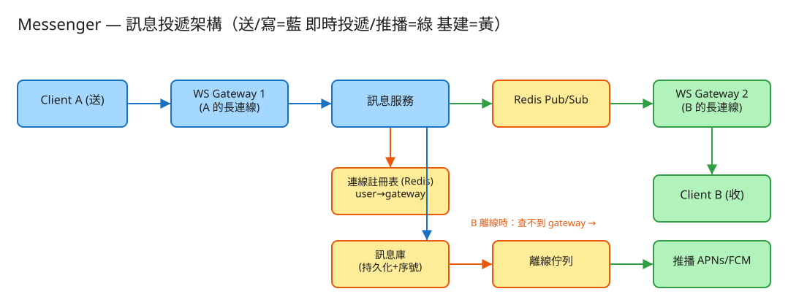

⑦ Messenger 即時通訊 · 初學者友善版
B 即時連線/同步
看故事就懂
輕鬆讀 30 分鐘
🧠 這份怎麼讀？
這份用「大腦比較好吸收」的方式重寫：先講生活比喻 → 把系統拆成小關卡 → 邊讀邊考自己 。
分成兩部分：Part 1 概念 （這系統在幹嘛）、Part 2 工程細節 （怎麼真的蓋出來，一樣白話）。
遇到 💭 停一下 就先自己想 3 秒再往下看——這叫「提取練習」，比一直往下滑記得更牢。
1. 60 秒搞懂它在幹嘛
你傳一句「在嗎？」給朋友，他幾乎同一秒 就看到、回你「在」。這件每天都在做、看起來理所當然的事，
背後其實要解一個很難的問題：你朋友的手機，現在連到全世界幾千台伺服器中的「哪一台」？訊息要怎麼準確地飛到那一台、再飛進他那支手機？
而且 Messenger 這種系統，同時有好幾億人 掛在線上。它的難，難在三點：要同時養著幾億條「一直接著的連線」、要瞬間找到對方連在哪、還要保證訊息不丟、不亂序、送到了你看得到打勾 。
🔑 一句話
即時通訊 = 一座超大型總機房 ：每個人的電話都一直接著不掛（長連線），總機隨時知道你坐在哪個分機（連線註冊表），
有人找你時，總機立刻把線轉到你的分機（訊息路由投遞）。
2. 為什麼「即時」這麼難？
很多人覺得：「不就是把訊息存進資料庫，對方再讀出來嗎？」——存訊息確實簡單。真正難的是「即時」 。用一個生活經驗就懂：
📞 講電話 vs 寄信
寄信（一般網站） ：你寫好寄出，對方有空才去信箱拿 ——你不知道他什麼時候會看。
講電話（即時通訊） ：線一直接著不掛 ，你一開口對方馬上聽到。
一般網站像寄信：你打開網頁（去拿信）才看到新內容，平常伺服器根本不知道你在不在。
但聊天要像講電話——對方一傳，你立刻 跳出通知。這就需要手機和伺服器之間「一直接著一條線」 ，
這條線就叫 WebSocket（長連線） ，像電話一直接著不掛。
所以難點來了：幾億人同時「電話接著不掛」，伺服器要一直養著 這幾億條線（很吃資源）；
而且 A 的線接在 1 號總機、B 的線接在 5847 號總機，兩台總機彼此不認識 ，訊息要怎麼從這台轉到那台？這才是真正的考點。
💭 停一下：為什麼聊天不能像一般網站那樣「對方自己重新整理才看到新訊息」？
看答案
因為那樣對方要一直手動重整、或讓 App 每隔幾秒去問一次「有新訊息嗎？」（叫輪詢，polling）。一直問很浪費、又不夠即時。聊天要的是「對方一傳，我這邊立刻跳出來 」——這只能靠一條一直接著的線（長連線），由伺服器主動把訊息推 給你，而不是你一直去問。
3. 把系統拆成 4 個關卡
別被「億級在線」嚇到。一則訊息的旅程，其實就是闖 4 關，一關一關來：
1 接線：每支手機接一條「不掛的電話」你一打開 App，手機就跟一台連線伺服器（總機，WS Gateway） 接上一條線，並且一直接著不掛 。
這台總機只做一件單純的事：幫你保管這條線、收發訊息 ，不管別的業務邏輯。
☎️ 比喻 就像你打去客服，電話接通後別掛斷 ，一直拿著聽筒。這樣對方一有事就能馬上跟你講，不用每次重撥。
因為總機很單純，不夠用就多加幾台 。幾億條線就分散在幾千台總機上。
2 登記：總機把「你坐在哪個分機」記下來你接上線的瞬間，系統要記一筆：「用戶 B → 現在連在 5847 號總機 」。這張表就是連線註冊表 。
📇 比喻：公司總機的分機表
大公司總機桌上有一張表：「王經理 → 分機 312」 。有人打來找王經理，總機看一眼表，立刻把線轉到 312。
連線註冊表就是這張分機表：記著每個人現在連在哪台伺服器 。
這張表變動超快 （你開 App 就上線、關掉就下線、跑去搭電梯斷線重連…），所以放在一個查得飛快、可以隨時改 的地方（Redis）。
順帶一提，「你現在是不是在線上」 （朋友清單上的綠點，叫 presence）也是看這張表有沒有你。
3 轉接：把訊息準確送到對方那台總機A 傳訊息給 B。系統先把訊息存起來 （確保不丟），然後查分機表：「B 連在哪？」
B 在線 ：查到「B 在 5847 號總機」→ 把訊息定向丟到那台總機 → 那台用它手上 B 的那條線，立刻推給 B。B 不在線 ：查不到 → 走第 4 關（先存信箱）。
📮 比喻：總機之間的內部轉接
A 的線接在 1 號總機、B 的線接在 5847 號總機，兩台彼此不認識。1 號總機不能自己把線接到 5847 號去。
解法是有個內部廣播系統 （Pub/Sub）：1 號總機喊一句「給 5847 號總機的 B：一則訊息！ 」，
只有 5847 號總機聽得到、收下，再推給 B。
4 留言 + 打勾：對方不在先存信箱、看了給回條對方關機、沒網路怎麼辦？先幫他存進信箱 （離線訊息暫存），等他下次上線，一次補收 ，同時用手機系統推播（叫醒他：「你有 3 則新訊息」）。
📭 比喻：管理員代收包裹 對方不在家，管理員先幫你收著 ，他回來再一次拿走。離線訊息暫存就是這個「代收信箱」。
還有那兩個小勾勾：送達一個勾、對方看了變兩個勾（已讀回條） 。對方讀到哪則，就回頭告訴你「我看到第幾則了」，你的畫面才更新成 ✓✓。
✅ 四關一句話
① 每支手機接一條不掛的線 → ② 總機把你在哪台 記進分機表 → ③ 有人找你就定向轉接 過去 → ④ 你不在就存信箱 ，你看了就回個已讀勾 。
4. 設計時最怕的 3 件事
工程上的「取捨」聽起來很抽象。換個方式記：這個系統最怕三件事 ，每個設計都是為了避開某個「怕」。
😱 怕「訊息弄丟」
聊天最不能接受的就是訊息憑空消失。所以規則是：一定要先把訊息存起來（持久化成功），才回覆「已送出」 。
如果只是丟到網路上沒存就回 OK，中途斷線那則就永遠不見了。先存好，再說送出。
😱 怕「訊息亂序」
你連發「我」「愛」「你」，對方看到「你愛我」就尷尬了。同一個對話的訊息順序絕對不能亂 。
解法：每個對話自己有一個一直加 1 的號碼牌（per-conversation 序號） ，第 1 則、第 2 則、第 3 則…對方照號碼排好，少了哪一號還能發現「漏接了」去補。只保證同一對話內有序就好 ，不同對話之間誰先誰後不重要——這樣才不會變成全系統的塞車點。
😱 怕「重複出現同一則」
手機網路不穩，App 沒收到回應會自動重送 ，結果同一句話送了兩次。
解法：每則訊息出門前，client 先貼一個專屬流水號（client_msg_id） ，伺服器看到同個流水號就知道「這則我收過了」，只算一次。重送沒關係，但畫面只出現一次（叫冪等）。
5. 一張圖看懂

✏️ 用 Excalidraw 開啟編輯（diagram.excalidraw）
白話導讀，跟著一則訊息從 A 走到 B：
📱 A 的手機 透過一條不掛的線連到 →
☎️ 1 號總機（WS Gateway） ，把訊息交給 →
🧠 訊息服務 ：先存進訊息庫 （不丟）、配一個對話號碼牌（序號） →
📇 查連線註冊表 （分機表）：B 連在哪台？
在線 → 透過內部廣播（Pub/Sub） 丟給 5847 號總機 → 立刻推給 📱 B 的手機 。
離線 → 丟進離線信箱 + 發手機推播 叫醒他，等他上線補收。
👀 B 看完 → 回一個已讀回條 → 反向送回 A，A 的畫面變 ✓✓。
6. 名詞白話翻譯
看完上面，這些詞你其實都已經懂了，這裡只是把「工程術語 ↔ 白話」對起來，Part 2 會用到：
工程術語 白話解釋 長連線 / WebSocket 「電話一直接著不掛」的那條線，伺服器能主動推訊息給你 WS Gateway（連線伺服器） 幫你保管那條線的「總機」，只收發訊息、不做業務 連線註冊表 總機的「分機表」：記著每個人現在連在哪台伺服器 presence（在線狀態） 朋友清單上的綠點：看分機表上有沒有你 Pub/Sub（發布/訂閱） 總機之間的「內部廣播」：喊一聲，只有對的總機收下 per-conversation 序號 每個對話自己的「號碼牌」，一直加 1，用來保順序 離線佇列 / 離線訊息暫存 對方不在時的「代收信箱」，上線一次補收 已讀回條（read receipt） 對方看了之後回傳的「我看到第幾則了」，讓你看到 ✓✓ 冪等 / 去重 同一則重送也只算一次，畫面不會出現兩遍 持久化 把訊息「存到硬碟」，確保斷電斷線也不會弄丟 fan-out（扇出） 群組裡一則訊息要同時送給很多成員 QPS 每秒幾筆請求（衡量「多忙」的單位） 水平擴展 不夠用就「多加幾台機器一起做」
🛠️ Part 2 ｜ 工程細節（一樣白話）
概念懂了，來看「真的要動手蓋，得想清楚哪些事」。一樣用比喻，不用怕。
7. 要準備多大？（規模估算）
🍱 比喻：辦活動前先估人數
辦活動前，你會先估「大概來幾個人」，才決定訂幾個便當、租多大場地 。
系統設計也一樣：先估數字，才知道要準備多大的「料」。這一步叫規模估算 。
我們估幾個關鍵數字（數字不必背，重點是感受它的「形狀」 ）：
估什麼 大概數字 所以呢？ 同時掛在線上的「電話」 2 億人用、約一半同時在線 ≈ 1 億條線 要一直養著 1 億條不掛的線，超吃資源 需要幾台總機 一台撐 ~50 萬條線 → 1 億 ÷ 50 萬 ≈ 200+ 台 線太多，總機一定要分很多台 每秒有人傳幾則 每人每天傳 40 則 → 平均約 9 萬則/秒，尖峰 ×3 ≈ 28 萬則/秒 存訊息的地方要扛得住這個寫入量 訊息要存多大 每則約 300 bytes、存 1 年 ≈ 876 TB/年 一台資料庫裝不下 → 要「分片」+ 冷熱分層
🔌 關鍵洞察：難的不是存，是「一直接著」
一般網站像便利商店——你來才服務，走了就沒事。但聊天伺服器像同時握著一億支電話聽筒不能放 ：
就算大家都沒講話，這一億條線你也得一直拿著（這叫「有狀態 」）。瓶頸不在「存訊息」，而在「養著海量長連線」＋「隨時知道誰連在哪、把訊息轉過去」 。
💭 停一下：為什麼說聊天伺服器是「有狀態」，跟一般網站不一樣？
看答案
一般網站是「無狀態」：你每次請求都可以隨便丟給任何一台機器處理，處理完就忘了你（像便利商店，誰結帳都行）。但聊天伺服器手上握著「你這條線」 ——B 的訊息只能由「正握著 B 那條線的那台總機 」推出去，不能隨便換一台。所以它記著「狀態」（誰連在我身上），這就是有狀態，也是為什麼需要「分機表」來追蹤。8. 系統之間怎麼溝通？（API）
🍔 比喻：點餐單
API 就是兩個系統之間講好的「點餐單格式 」：你要點什麼（給我哪些欄位）、我回你什麼。
講好格式，雙方就能合作，不用知道對方廚房怎麼運作。
這題的「點餐單」分兩種：一種是那條不掛的線（WebSocket） ，一種是普通的一問一答（HTTP） ：
① 接上那條不掛的線（最關鍵）
WS /connect 握手時帶上你的身分(token)
→ 接通後，總機立刻在「分機表」寫：我這位用戶 → 連在我身上
← 之後總機可以「主動推」給你：{ 類型:訊息, 對話:c:A:B, 序號:7, 來自:A, 內容:"哈囉" }重點是「主動推」（server push） ：訊息一來，總機直接從這條線塞給你，不用你一直問「有沒有新訊息」。這就是「即時」的來源。
② 送一則訊息
POST /api/v1/messages
給我：{ 對話:"c:A:B", 給誰:"B", 內容:"哈囉", client_msg_id:"uuid" }
我回：201 { 訊息ID:123, 序號:7, 狀態:"sent" }那個 client_msg_id 是手機自己貼的專屬流水號 ：網路不穩重送時，伺服器靠它認出「這則我收過了」，畫面才不會出現兩遍（這就是冪等去重）。
③ 已讀回條 / 上線補收離線訊息
POST /api/v1/conversations/{對話}/read { up_to_seq: 7 } ← 我看到第 7 則了
GET /api/v1/conversations/{對話}/messages?after_seq=5 ← 把第 5 則之後的給我上線時用「給我第幾號之後的 」一次補收，正好接上斷線前的進度，順序也對得起來。
9. 系統要記住哪些事？（資料模型）
📒 比喻：四本筆記本
系統要把資料記在「筆記本」（資料表）裡。注意它們放的地方不一樣 ，這正是這題的精髓。
📇 分機表（誰連在哪）— 放 Redis記 用戶 → 連在哪台總機、最後心跳時間。這本變動超快 （上下線頻繁），所以放在查得飛快、能隨時改的 Redis，而不是 正式的主資料庫。
沒心跳超過一段時間（TTL 過期）就當作離線，自動清掉。
💬 訊息簿（聊天記錄）— 永久存、要分片每則一列：對話ID、序號(seq)、訊息ID、誰傳的、內容、時間。這是永久歷史 ，量超大，所以依「對話」切成很多片 分開存。
那個 序號(seq) 就是每個對話的「號碼牌」，保證順序。
📥 收件進度簿（你各對話讀到哪）記 用戶、對話、已讀到第幾號、已送達第幾號。畫面上的 ✓✓ 和「未讀 3 則」就是看這本。多支裝置（手機＋電腦）也靠它對齊進度 。
📭 離線信箱（對方不在先存這）記 用戶 → [ 還沒送到的訊息ID… ]。對方一上線就把這裡的東西照順序補投 給他，並觸發手機推播叫醒他。
為何要分這麼開
「分機表」是會一直變的暫態資料（放 Redis）；「訊息簿」是永久歷史（落地分片）。 把「連線狀態」和「訊息持久化」分開，是這題最核心的切分——它們的特性完全不同，硬塞在一起會兩邊都做不好。
10. 哪裡會塞車、怎麼拓寬？（擴展）
🚗 比喻：找出塞車路段，拓寬它
系統變大時，總有某個環節會先「塞車」。工程師的工作就是找出最會塞的地方，把它拓寬 。一個一個看：
哪裡會塞車 怎麼拓寬 一台總機掛不了那麼多條線 多加幾台總機 ，用固定規則把用戶分配到不同台（水平擴展）A 在這台、B 在那台，互相不認識 靠分機表 + 內部廣播（Pub/Sub） 定向轉接過去 訊息太多，一個資料庫裝不下 依「對話」切片分散存 （分片）；舊訊息搬到便宜的冷儲存 群組裡一則訊息要送給上千成員 小群「寫擴散 」、超大群「讀擴散 」（見下節取捨） 很多人同時上線，一起來補收離線訊息 信箱限長度 + 批次補收 + 推播合併 ，避免一窩蜂壓垮
11. 還有哪些「魚與熊掌」？（取捨）
「Part 1 的三個怕」是核心取捨。這裡補幾個常被面試官追問的：
⚖️ 寫擴散 vs 讀擴散（群組的核心取捨）
寫擴散 ＝送的當下就抄一份到每個成員的信箱（讀很快，但人多時抄到手軟）→ 適合小群/1:1 。
讀擴散 ＝只存一份，成員要看時才現場去撈（省寫入，但讀的時候慢）→ 適合幾萬人的大群/廣播 。實務常混著用 。
⚖️ 順序要保到多嚴？
只保「同一個對話內 」有序就好。如果硬要做「全系統所有訊息的絕對先後」，那個「全域號碼牌」會變成大家都要排隊領、塞死整個系統的單點瓶頸。剛剛好就好。
⚖️ 送達 vs 已讀
「送達 」（訊息到了你手機）和「已讀 」（你真的點開看了）是兩回事，要分開記，回條才準——不然你會以為對方已讀其實只是收到了。
💭 追問：手機和電腦同時登入，怎麼讓兩邊進度一致？
每個裝置各自記「我讀到第幾號（last_read_seq）」，全部用同一套對話序號 對齊。哪台讀到新的就更新，其他裝置照序號補上，畫面就同步了。💭 追問：怎麼保證「絕對不丟訊息」？
規則是「先存好（持久化成功）才回送出」 。client 萬一斷線重連，就用「給我第幾號之後的」把中間漏接的補回來——靠序號就知道少了哪幾號。💭 追問：端到端加密（只有你和對方看得到）怎麼做？
訊息在你手機上就先加密 ，伺服器全程只是轉發一團密文 、自己看不懂內容，到對方手機才解開（像 Signal 的做法）。伺服器負責「送到」，不負責「看懂」。12. 動手玩玩看
讀十遍不如玩一遍。這題有一個真的可以跑 的小程式，讓你親眼看到「在線即時投遞、離線補收、已讀回條」：
# 啟動（在這題的 demo 資料夾裡）
cd demo
php -S localhost:8007 -t public
# 然後瀏覽器打開 http://localhost:8007
讓 A、B 都上線 （等於兩支手機都接上線、寫進分機表）。
A 傳給 B → 看 B 這邊收到、序號一直遞增 ；B 標記已讀 → A 看到 ✓✓ 。
把 B 下線 ，再用 A 傳訊息 → 觀察訊息進了離線信箱 + 觸發推播 ；B 再上線時自動補收 。
玩的時候想一下 同一則訊息送兩次，看會不會出現兩遍（這就是冪等去重 在運作）。把 B 下線再上線，看補收的訊息順序對不對（這就是序號保順序 + 離線暫存 ）。
每隔幾秒去問一次（poll） 」模擬那條不掛的線，但分機表、在線/離線路由、序號、已讀、離線補收 這些核心邏輯都是真的。換成正式的 WebSocket + Pub/Sub，架構不變。
13. 考考自己
先不要看答案，自己用講給朋友聽 的方式回答看看（講得出來才是真的懂）：
Q1：用「講電話 vs 寄信」解釋，為什麼即時通訊需要長連線（WebSocket）？
一般網站像寄信：對方有空才去信箱拿，你不知道他何時看。聊天要像講電話——線一直接著不掛，對方一傳你立刻聽到。長連線就是這條「一直接著的線」，讓伺服器能主動推 訊息給你，而不是你一直去問。Q2：什麼是「連線註冊表」？用總機的比喻說說看。
它是總機桌上的分機表 ，記著「每個用戶現在連在哪台伺服器」。有人找 B，系統查表得知「B 在 5847 號總機」，就把訊息轉到那台，由它推給 B。Q3：A 在 1 號總機、B 在 5847 號，兩台不認識，訊息怎麼過去？
靠內部廣播（Pub/Sub） 。訊息服務查到 B 在 5847 號後，往「5847 號訂閱的頻道」喊一聲，只有那台收下，再用它手上 B 的那條線推給 B。Q4：對方不在線時，訊息去哪了？他上線後怎麼辦？
先存進離線信箱（離線佇列） ，並發手機推播叫醒他。他一上線就照序號一次補收 ，順序也對得起來。Q5（工程）：為什麼「分機表」放 Redis，而「訊息簿」放正式資料庫並分片？
分機表是變動超快的暫態資料 （上下線頻繁），需要查得飛快、隨時可改，放 Redis 並用 TTL 自動清離線。訊息簿是永久歷史、量超大 ，要落地保存並依對話分片。兩者特性完全不同，所以分開放——這是這題最核心的切分。Q6（工程）：怎麼保證同一對話訊息不亂序、又不會重複？
每個對話有自己一直加 1 的序號（per-conversation seq） ，收件方照號碼排好、發現少了哪號就去補。每則再帶手機貼的 client_msg_id ，伺服器看到同號就知道收過了、只算一次（冪等去重）。Q7（工程）：群組大訊息為什麼要分「寫擴散 / 讀擴散」？各適合什麼？
寫擴散＝送的當下抄一份到每個成員信箱，讀快但人多會抄爆 ，適合小群/1:1。讀擴散＝只存一份、看時現撈，省寫入但讀較慢 ，適合幾萬人的大群。實務常混用：小群寫擴散、超大群讀擴散。14. 30 秒回顧
即時通訊 = 一座億級的超大型總機房。
4 個關卡： ① 每支手機接一條不掛的線（長連線）→ ② 總機把「你在哪台」記進分機表（連線註冊表）→ ③ 有人找你就定向轉接（Pub/Sub 路由）→ ④ 你不在先存信箱（離線暫存）、你看了回個已讀勾。
3 個怕： 怕弄丟（先存好才回送出）、怕亂序（每對話一個遞增序號）、怕重複（client_msg_id 去重／冪等）。
工程細節一句話： 難的不是存訊息，是「養著一億條線 + 知道誰連在哪」→ 分機表放 Redis、訊息簿分片落地 → 用「點餐單(API)」溝通、靠長連線主動推 → 群組看大小選寫擴散/讀擴散。
想看更精簡、面試速查用的版本？👉 前往完整版 （同樣內容的工程速查格式）。
⑦ Messenger 即時通訊 · 初學者友善版 · 系統設計學習專案